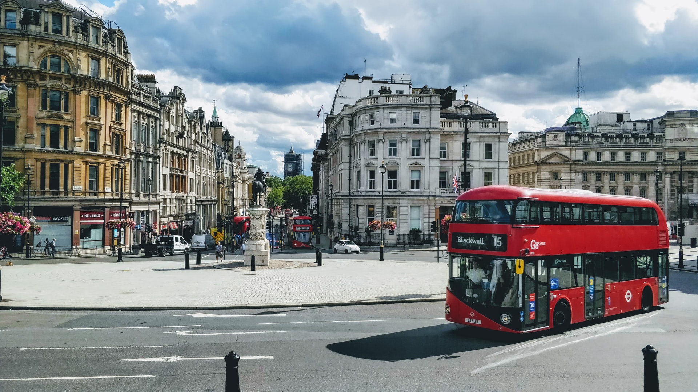

Transport in London
London Busses
Public transport services are mostly driven through the executive agency for transport in London: Transport for London controls the majority of public transport, including the Underground, Buses, Tramline, the Docklands Light Railway, London River Services and the London Overground. Other rail services are either franchised to train operating companies by the Department for Transport or, like Eurostar and Heathrow Express, operated on an open-access basis. also controls most major roads in London, but not minor roads. In addition, there are several independent airports serving London, including Heathrow, the busiest airport in Europe.

Buses are in use since 1829 in the public transport of London. In the decades since their introduction, the red London bus has become like a symbol of the city.

As of 2021, London has 675 bus routes and around 19,000 bus-stops served by over 9,000 buses, almost all of which are operated by private companies under contract to London Buses, part of Transport for London.
London has an extensive and developed transport network which includes both private and public services. London's public transport network serves as the central hub for the United Kingdom in rail, air and road transport.
The Tube

The London Underground (also known simply as the Underground or by its nickname the Tube) is a very fast rapid transit system serving London and some parts arround. The Average speed of the Tubes are 33 km/h and is operated by the London Underground Limited.
The Underground has its origins in the Metropolitan Railway, the world's first underground passenger railway. Opened on 10 January 1863, it is now part of the Circle, District, Hammersmith & City and Metropolitan lines. The first line that started to operate underground electric traction trains, the City & South London Railway in 1890, is now part of the Northern line. The network is one of the bussiest metro stations worldwide.
The system's first tunnels were built just below the ground, using a cut-and-cover method. Which means they dig a hole build the metro in there and later fill everything else up again. Later, smaller, roughly circular tunnels—which gave rise to its nickname, the Tube—were dug through at a deeper level. The system serves 272 stations and has 250 miles (400 km) of track. Despite its name, only 45% of the system is under the ground: much of the network in the outer environs of London is on the surface in addition, the Underground does not cover most southern parts of Greater London, and there are only 33 stations south of the River Thames.